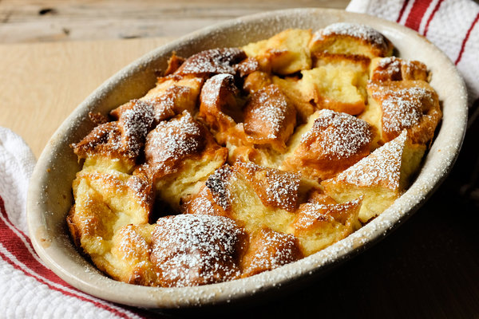

Bread Pudding Recipe

Description
In my opinion, there is nothing like a fresh, warm bread pudding to finish off a meal. With simple prep, and not many ingredients, it is a stellar option to cap off a meal.
Not to mention, bread pudding can help use up leftover ingredients, and is a great way to conserve leftover items laying around post-meal.
Ingredients:
- 2 cups milk
- 2 tablespoons (1/4 stick) unsalted butter, more for greasing pan
- 1 teaspoon vanilla extract
- ⅓ cup sugar
- Pinch salt
- ½ loaf sweet egg bread like challah or brioche, cut into 2-inch cubes (about 5 to 6 cups)
- 2 eggs, beaten
Steps:
- Heat oven to 350 degrees. In a small saucepan over low heat, warm milk, butter, vanilla, sugar and salt. Continue cooking just until butter melts; cool. Meanwhile, butter a 4-to-6-cup baking dish and fill it with cubed bread.
- Add eggs to cooled milk mixture and whisk; pour mixture over bread. Bake for 30 to 45 minutes, or until custard is set but still a little wobbly and edges of bread have browned. Serve warm or at room temperature.